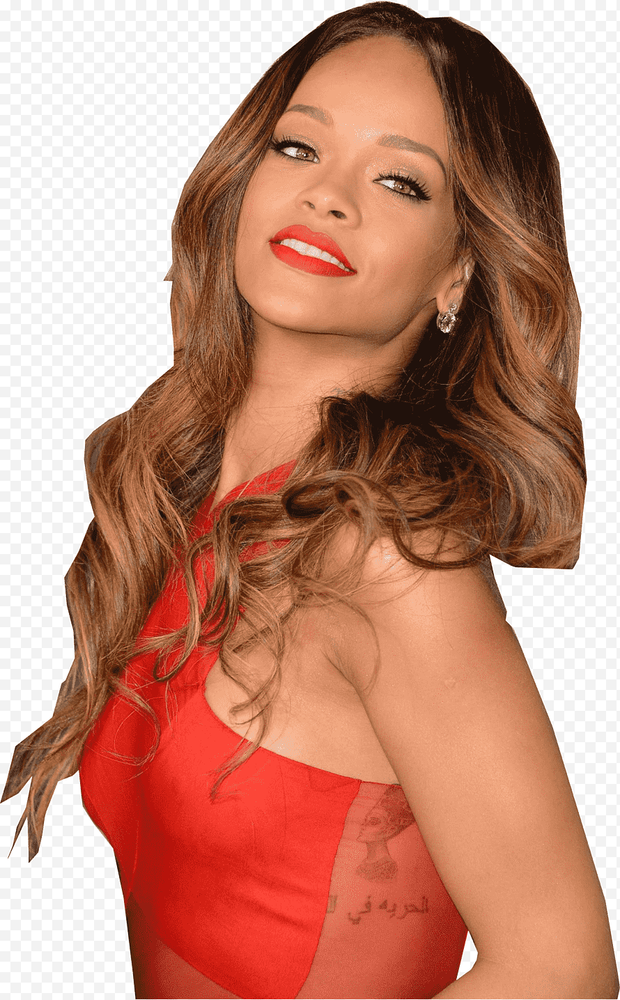

Robyn Rihanna Fenty nació el 20 de febrero de 1988 en Saint Michael, Barbados, hija de la contable Mónica Braithwaite y del supervisor de almacén Ronald Fenty.
Posee ascendencia afrobarbadense, afroguyanesa e irlandesa.
Rihanna tiene dos hermanos, Rorrey y Rajad Fenty, dos medias hermanas y un medio hermano de su padre, cada uno de ellos de diferentes madres.
Creció en un bungaló de tres habitaciones en Bridgetown y vendió ropa con su padre en un puesto en la calle. Su infancia se vio profundamente afectada por el alcoholismo y la adicción al crack de su padre, lo que produjo tensiones en el matrimonio de sus padres.Su padre solía golpear a su madre y ella trataba de interponerse entre ellos para detener las peleas.
Cuando era niña, constantemente le hacían tomografias computarizadas por los terribles dolores de cabeza que sufría: «Los médicos incluso pensaron que era un tumor, porque era tan intenso».Cuando tenía 14 años, sus padres ya se habían divorciado y su salud comenzó a mejorar.
La cantante creció escuchando música reggae.
Asistió a la Escuela Primaria Charles F. Broome Memorial y a la Escuela Secundaria Combermere, donde estudió junto a los futuros jugadores internacionales de cricket Chris Jordan y Carlos Brathwaite. Rihanna fue cadete del ejército en un programa submilitar, donde la cantante y compositora Shontelle era su sargento. Aunque inicialmente quería graduarse, luego eligió seguir su carrera musical.
En 2003, Rihanna formó un trío musical con dos de sus compañeros de clase.
Fue descubierta en su país natal por el productor musical Evan Rogers. Se conocieron en diciembre de 2003 a través de amigos de la mujer de Rogers y Rihanna. Mientras la pareja se encontraba de vacaciones en Barbados, una amiga de Rihanna le dijo a la mujer de Rogers que esta aspiraba a ser cantante.
Sin un nombre o material discográfico, el «girl group» logró una audición con Evan Rogers. Rogers comentó: «el momento en que Rihanna entró a la habitación, fue como si las otras dos chicas no existiesen». Durante la audición Rihanna cantó «Emotion» de Destiny's Child y «Hero» de Mariah Carey. Impresionado, Rogers programó una segunda reunión pero con la madre de Rihanna presente. Después, el productor musical la invitó a su ciudad natal, en Estados Unidos, para grabar una maqueta que sería enviada a distintos sellos discográficos. Más tarde grabó la maqueta interrumpidamente, debido a que solo podía grabar al terminar las clases. «Pon de Replay» y «The Last Time» fueron dos de las canciones grabadas para la maqueta y que finalmente fueron incluidas en su álbum debut, Music of the Sun.
